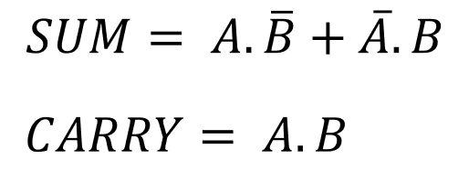
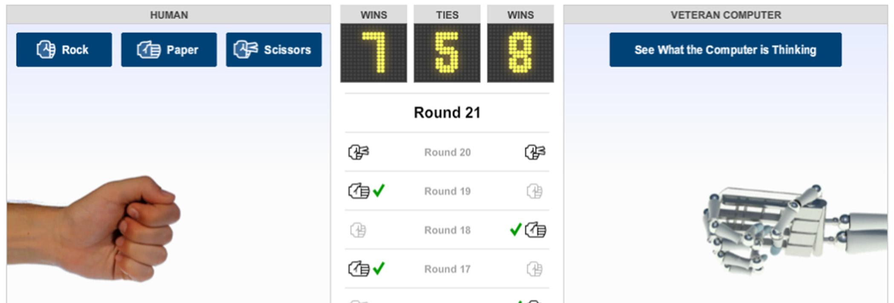

Section A - Short Answer Questions - 60 marks
Answer all twelve questions.
Question 1
Given the following JavaScript variable declarations, state the result of each of the JavaScript expressions in the table below.
let a = 5;
let b = 2;
| Expression | Result |
|---|---|
| a * b | 10 |
| a ** b | 25 |
| a / b | 2.5 |
| b % a | 3 |
| ++a | 6 |
Question 2
Many modern laptops have a hard‐disk drive (HDD) which can exceed 1TB in capacity. If you are buying a laptop you may also have the option of a solid‐state drive (SSD) with a capacity of 512GB.
(a) In terms of storage capacity, what do the letters GB and TB stand for?
GB: Gigabyte
TB: Terabyte
(b) Assuming that neither cost nor capacity were issues, explain why you might opt for the SSD rather than the HDD.
SSD is much faster than HDD. It is also lighter, more durable, and uses less energy.
Question 3
The program counter is a special register in the processor of a computer. Outline the purpose of the program counter.
At the start of the fetch-execute cycle the 'program counter' contains the address of the next instruction to be executed. In the fetch-execute cycle, the contents of the address in the PC are loaded from memory to the 'instruction register'.
Question 4
The World Wide Web (WWW) and the network infrastructure that supports it allow for seamless transmission of data such as web pages, voice applications and streaming services. This is all possible due to the protocols that it uses.
(a) When referring to World Wide Web infrastructure, what is meant by the term protocol?
A protocol is a set of rules governing the exchange or transmission of data between devices on the network infrastructure. The communication system governing the Internet is known as Internet Protocol (IP). This is a set of rules for routing and addressing packets of data so that they can travel across networks and arrive at the correct destination.
(b) State the name and purpose of one such protocol.
Name: http
Purpose: Hyper text transfer protocol is an application layer protocol, which helps to transfer hypertext, like html, to your computer. Web browsers and web servers communicate
using this protocol.
Question 5
The half‐adder logic circuit shown below generates two outputs, S and C, from two inputs, A and B.
(a) What is the value of C when the inputs A and B are both 0?
(The superintendent will give you a copy of page 78 (Logic Gates) of the Formulae and Tables booklet on request.)HALF ADDER:
Truth table:
| A | B | Sum | Carry |
|---|---|---|---|
| 0 | 0 | 0 | 0 |
Solution: C = 0
(b) What is the value of S when the inputs A and B are both 1?
HALF ADDER:
Truth table:
| A | B | Sum | Carry |
|---|---|---|---|
| 1 | 1 | 0 | 1 |
Solution: S = 0
Question 6
The American Standard Code for Information Interchange (ASCII) is a character encoding standard adopted by the Institute of Electrical and Electronics Engineers (IEEE) in 1963.
(a) Why are encoding standards such as ASCII important?
ASCII and Unicode enable developers to design interfaces that both humans and computers understand. ASCII codes a string of data as ASCII characters that can be interpreted and displayed as readable plain text for people and as data for computers.
(b) State one limitation of ASCII.
The 128 or 256 character limits of ASCII and Extended ASCII limits the number of character sets that can be held. Representing the character sets for several different language structures is not possible in ASCII, there are just not enough available characters.
Question 7
The 8‐bit binary representation for the ASCII character K is shown below.
Convert this binary number to hexadecimal notation.
0100 1011
| Place value | 128 | 64 | 32 | 16 | 8 | 4 | 2 | 1 |
| Binary Number | 0 | 1 | 0 | 0 | 1 | 0 | 1 | 1 |
| Decimal Number | 0 | 64 | 0 | 0 | 8 | 0 | 2 | 1 |
64+8+2+1=75
| Divide by 16 | Remainder |
|---|---|
| 75/16=4 | 11=B |
| 4/16=0 | 4 |
Answer: 4B
Question 8
The diagram below sets out the operation of the bubble sort algorithm to sort the list of integers [8, 5, 9, 7, 6]. The algorithm works by scanning over the data in four passes. The diagram is complete for pass 1 and started for pass 2.
Complete the diagram for passes 2, 3 and 4. You only need to fill in the numbers.

Question 9
The data set below shows the raw data collected from the result of a 100m school race.
List three problems with the data in the data set
Some of the data is incorrect, which will cause problems when using, manipulating or analysing the data. In the data set, there is a surname missing, an age with a negative value, and the there are two numbers in the time column that are incorrect, because of an incorrect format. The data will need to be 'cleaned'. Data cleansing, also referred to as data scrubbing, is the process of fixing incorrect, incomplete, duplicate or otherwise erroneous data in a data set.
Question 10
The illustrations below show HTML code and the resulting web page as it would be displayed in a typical web browser. Some of the code has been replaced with the numbers 1 – 4.
Complete the table below with the missing code.
| Number | Missing Code |
|---|---|
| 1 | <!DOCTYPE html> <html> |
| 2 | Menu |
| 3 | <ul> </ul> |
| 4 | href |
Question 11
The intention of the JavaScript function below is to return a student grade descriptor based on a percentage grade as shown in the table.
The code runs without any syntax errors but it does not always return the correct grade descriptor. Outline one way in which the function could be modified so that it works as intended.
In the 'if statements', there should be curly braces after the 'condition'. For example:
if (condition) { }
So applied to the example, it should be:
if (percentageGrade >= 80){
5 gradeDescription = "Distinction";
}
if (percentageGrade >= 40){
8 gradeDescription = "Pass";
}
Question 12
The travelling salesperson problem is commonly used in the study of algorithms and appears in formats similar to the problem below.
“Given a list of cities and the distances between each pair of cities, what is the shortest possible route that visits each city once and returns to the original city?”
Why would heuristics be considered a good approach to solving a problem such as this?
A brute-force approach would find all itineraries and
then pick the best. This would take too long.
Heuristics is an approach to problem solving that can be used to make a quick decision. The solution isn't guaranteed to be optimal. There's a trade-off between correctness vs performance.
Seeing as I'm in an exam, time is of the essence. So, heuristics is a suitable strategy, seeing as finding an optimal solution is impractical or impossible. Some common examples of heuristics includes trial and error, a rule of thumb, an educated guess and intuitive judgement.
Section B - Long Questions - 70 Marks
Answer all three questions
Question 13
In his book The Art of Computer Programming, Donald Knuth states that “searching is the most time‐consuming part of many programs, and the substitution of a good search method for a bad one often leads to a substantial increase in speed.”
(a) The Python code below shows an implementation of a search algorithm. Examine the code and answer the questions that follow:

(i) State the name of the above search algorithm.
Linear search algorithm
(ii) What is the data type of the variable called found?
A boolean
(iii) Step through how the algorithm finds the name Zoe in the list called names.
- The algorithm sets a marker, called index, at the start of the list. (index=0).
- Using a while loop, the algorithm loops through the array (names) until it finds the string, "Zoe".
- "Zoe" has been input by the user and is assigned to the variable (name).
- The algorithm starts at position index[0].
- It checks if the string "John" is equal to "Zoe".
- They do not match, so: found=False.
- The if-else statement moves to the 'else' branch and index increments to index[1].
- The algorithm repeats steps 5 - 7 for "Mary" and the index increments to index[2].
- The algorithms repeats step 5 for "Zoe", and the strings match.
- found=True
- The algorithm exits the loop
- It prints "Result:" and returns the index number 2.
(iv) What would be the value of index after running the algorithm if the user entered a name that was not present in the list called names?
5
(v) What is the worst‐case time complexity of this search algorithm? Explain your answer.
The linear (sequential) search algorithm used to find some the target value in the list
that contains ùëõ values is a classic example of an ùëÇ(ùëõ) algorithm. This is because in the
worst case scenario every element in the list will have to be examined in order to find the
target value.
The more items in the array 'names', the longer it will take to finish the search. The array we are searching has 5 items, so n=5. In a worst-case time scenario, it will take 5 times longer than if n=1.
(b) Binary search is generally regarded as a highly efficient search algorithm.
(i) State one disadvantage of the binary search algorithm.
The main drawback of the binary search is that the elements must be sorted beforehand.
(ii) Step through how the binary search algorithm finds the integer 28 in the list L shown below
- Set low = 0
- Set high = length of list -1 (7)
- Set mid to (low+high)/2, rounded down to an integer (3). So the mid position is at index[3].
- The algorithm checks if the value at the mid position is the same as the target value. It is not. (18 ≠28)
- The value at the mid position is less than the target value (18<28)
- Set low = mid + 1. The low position is now at index[4].
- The value of mid is 5.
- The algorithm checks if the value at the mid position is the same as the target value. It is not.
- The value at the mid position is greater than the target value (35>28)
- The algorithm finds 28 on the next step.
- The algorithm terminates.
(iii) What is the maximum number of comparisons the binary search algorithm would need to make if the value to be searched for did not exist in a list of 8 items?
Binary search is an algorithm that is logarithmic: as the value n increases, the time complexity of your program increases by a logarithmic factor.
The relationship between the size of the input (ùëõ) and the maximum number of comparisons (ùëê) required is given by:
ùëê = log₂ ùëõ + 1
When n=8, c=4
The maximum number of comparisons in a list of 8 items is 4.
(c) Why is the study of algorithmic efficiency considered to be important in computer science?
Algorithmic efficiency refers to how well algorithms work. Two common measures of algorithmic efficiency are space and time
– the former provides an indication of the demands an algorithm places on memory in terms
of space requirements on a computer system, while the latter focuses on the time (CPU) requirements of an algorithm to finish. The study of time complexity provides us with a framework which can be used to compare
algorithms and understand how well they perform in relation to one another.
A computer’s performance can depend on a variety of different factors (e.g. processor clock
speed, word size, bus width and amount of available memory), and so, an algorithm that
takes 1000 milliseconds to run on one computer might run in just 10 milliseconds on another (one hundred times faster!) In terms of algorithm efficiency, our main concern is to find the worst case performance. How much time is required for the algorithm to complete, such as finding the smallest number in a sorted list. With the advances in machine learning and big data, algorithmic efficiency has become crucial. Vast quantities of data are being used to seek solutions to social issues, such as cancer research or climate change.
Programmers need to be aware of time complexity of the algorithms they write
(or choose to use). Algorithms that have constant, linear and polynomial time complexities (i.e.
tractable algorithms) are all considered useful. But elementary Sort algorithms have quadratic time complexity. This means that sorting 5
shelves of books will take 25 times longer than sorting a single shelf (not 5 times longer!) Algorithms can be used to solve all kinds of problems such as the planning of transportation routes, the computation of DNA sequences and minimising the use of fuel in space exploration. It's essential that algorithmic efficiency is taken seriously, so these caluclations can be done in an acceptable time-frame.
Question 14
Alan Turing is widely regarded as one of the founders of computer science because of his work on the development of the Turing Machine and the Turing Test.
(a) Explain the importance of Turing Machines as a computational tool.
It is argued that Alan Turing’s machine laid the foundations for the development of Computer Science and Machine Learning. A Turing Machine can be constructed to solve any given computer algorithm. It is in this sense, the first concept of a universal, all-purpose, computing machine.
(b) The illustration below depicts a Finite State Machine which, for a particular Turing Machine,
defines two states, S1 and S2, and three transitions.
Study the illustration and answer the questions that follow.
(i) What is the significance of state S2?
A Turing machine is said to be in a particular state. States are denoted by the letter S and a number. S2 means state two. S2 also has a double circle, which is used to denote the final or halting state. This is the state the Turing Machine is in when it finishes.
(ii) Complete the state transition table below based on the above Finite State Machine.
The first row has already been completed.
| Current State | Input | Output | Next State |
|---|---|---|---|
| S1 | 0 | 0 | S1 |
| S1 | 1 | 1 | S1 |
| S1 | B | 0 | S2 |
(iii) Starting from an initial state of S1 and an input of 10110B, as shown on the tape diagram below, show how the Turing Machine produces an output of 101100.
In your answer you should trace the computation clearly by showing the contents of the tape at the end of each state transition. You should complete the tape and the current state for each row. You can assume that the read/write head is moved one place to the right at the end of each step.
The first two rows have been completed for you.
c In the mid‐20th century, Turing carried out what is now generally regarded as the earliest substantial work in the field of Artificial Intelligence (AI). There is a lot of controversy and discussion about the area of AI in recent times.
Bill Gates stated that “humans should be worried about the threat posed by artificial intelligence”.
Discuss the quotation above, focusing on the potential positive and negative effects of AI on society.
The term Artificial
Intelligence was only coined in 1955 by John McCarthy as: “the science and engineering
of making intelligent machines.” The goal of AI is to teach
computers to do things that humans do, only better. One of those key things is learning.
Machine Learning is therefore in some ways a subset of AI, but it has grown so rapidly
in the early 21st century that some people argue it has outgrown AI.
Over the past few years, deep learning has become better than humans at different skills
such as reading, writing, listening and seeing. It's capability has grown so much, that it can beat the best chessmasters. Computer performance is surpassing human performance. It's similar to the industrial revolution, where engines caused all kinds of social disruption, in both positive and negative ways. Society in turn, adapted to these new developments. The machine learning revolution will be different. The improvements in AI will continue to grow exponentially for the forseeable future. This is a type of social disruption humanity has never experienced before.
There are enormous potential benefits to AI. It can help solve some of the biggest challenges in society, such as medical research and diagnosis, climate change and agriculture. The service industry in the developed world accounts for about 80% of employment. From waiters to doctors to accountants, they need to learn how to work with AI in order to thrive. The developing world can save lives by embracing automated services. For example in the area of training doctors or solicitors. In Ireland, there's a shortage of medical experts, and AI can help to enhance doctors' efficiency. Should the training be how to work with and supervise AI as much as learning how to work with patients? There is a massive shortage of skilled workers and AI can help to alleviate that problem. Airports use AI to route planes to the appropriate termini, banks use AI to search for suspicious activity on accounts and you know those recommendations you get online about films to watch or products to buy? That’s due to AI.
There are also negative aspects to AI. Bill Gates worries regarding the threat of AI to humans may be well-founded. Both developed and developing societies, must change their
structures to accommodate the disruptive effect of AI. There are fears that AI will drive changes in labour markets and machines will take human jobs. If the services industry does not embrace this technology, will the technology consume the services industry? There are also ethical concerns that go along with new AI applications. Video tracking has been developed and used in positive settings, such as the medical field, helping patients to recover from injuries. But it can also be used by governments to track citizens and potentially driving society towards an Orwellian future.
One of the main questions regarding AI is, "who has access to it?". Currently, AI is expensive and only big tech companies can afford it. But that raises concerns that a small number of people control the destiny of AI. We may want more people involved in the discussion regarding the benefits that AI can provide. Finally, AI doesn't share our values. The risk is that AI will do what we tell it to do, but in a way we don't expect. It may adopt bias in relation to ethic groups or gender, from collecting biased data. So it could potentially amplify rather alleviate some of the social issues we currently face.
Question 15
Rock Paper Scissors is a popular two player game in
which each player simultaneously picks one of three
objects – rock, paper or scissors. The rules to
determine the winner are relatively straightforward:
- Rock beats Scissors
- Paper beats Rock
- Scissors beats Paper
If both players choose the same object, the result is a
draw (tie).
You have been asked to design and develop an interactive computerised Rock Paper Scissors
game.
(a) State whether you would use a staged or iterative development process for the project. Justify your answer by giving two reasons for your decision.
Staged or iterative: iterative.
Reason 1: I think the iterative development process is more appropriate for developing this software. I am familiar with the game, but users may have good ideas regarding the look of the game and how it behaves. The iterative development process would highlight the importance of the developer working closely with the users and adapting the software based on feedback.
Reason 2: Seeing as the game is fairly straight-forward, a flexible approach would be sensible. Iterative development also supports self-organising teams who reflect regulary on how to become more effective. I feel is a good way for software developers to improve their strategies and skills while working on a project; as well as producing good quality software.
(b) As project manager one of your main tasks will be to form a project team and assign roles
and responsibilities to the team members.
Identify two roles that would be appropriate for this project and for each role outline two
responsibilities associated with that role.
Role 1: Developer
Responsibility 1: The developer would write the software. This is one of the most important roles, seeing as the game is well-known and there isn't as much preparation needed as some other projects.
Responsibility 2: The developer also has a responsibility to produce software documentation. As project manager, I would need to keep informed of the progress made, and issues arising and documentation would facilitate oversight of the project.
Role 2: Tester
Responsibility 1: The tester produces test plans. This stage is essential to make sure that when the testing is done, as a project manager, I can ensure all scenarios have been covered, and the software matches the brief.
Responsibility 2: The tester carries out the tests. This is an important stage in the software development process to see if the code that has been written, functions properly.
(c) Your project team has identified two user interfaces that they observed in other Rock Paper Scissors games. Both of these interfaces are shown on the next page.
(i) Compare the two interfaces in terms of the types of applications and the functionality they offer.
User interface 1 has both good and bad UX design elements. The good design aspects include: good use of colour. The graphic design includes pictures and icons. Functionality is good, with extra interesting features, such as links to social media and the typography is good.
The negative aspects include an unclear purpose of the software. There is no title for the game. There are too many distractions, with options to 'see what the computer is thinking', and predictions that don't make sense (two scissors make a draw).
The user interface 2 is a much more simple design. IT's also much less colourful than UI 1. The colours lack effort or imagination. On a positive note, the purpose of the game is clearer. Ther is a title. And the navigation is more straight forward. There are no distractions and the language used is clear and understandable.
(ii) Provide two examples of how adaptive technology could be incorporated into a game of Rock Paper Scissors.
1. Color modification, such as high contrast mode or dark mode on a device, increases the contrast of colors on a screen. Black text on a white background or white text on a dark background are both examples of high contrast. High contrast makes the user interface easier to see for people with low vision. The rock, paper, scissors game should include a button to provide this option.
2. The code used to develop the software should be structured well and include the correct tags to facilitate screen readers for hearing impaired users. Using alt attributes for images and lists where possible, for example, is crucial for screen readers to provide a good user experienced for hearing impaired users.